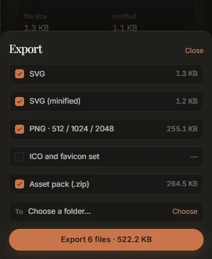

Export
When the drawing is right, three buttons at the foot of the rail take it out of the app: Export (files in a folder), Copy SVG (the clipboard) and the comparison card.
The export sheet
Export, or Ctrl+E (⌘+E on a Mac), opens the export sheet over the rail.

Tick what you want:
| Row | Files written | Ticked at first |
|---|---|---|
| SVG | name.svg: the drawing as traced |
yes |
| SVG (minified) | name.min.svg: the same drawing with no ids, no groups and no trailing zeros |
yes |
| PNG · 512 / 1024 / 2048 | png/name-512.png, png/name-1024.png, png/name-2048.png |
yes |
| ICO and favicon set | favicon/favicon.ico (16, 32 and 48 px inside), and favicon/favicon-16.png, -32.png, -48.png |
no |
| Asset pack (.zip) | name-assets.zip: everything above, plus palette.json and a README.txt |
yes |
name is the name of the image you opened. The size beside each row is the real size of the files
it will write: the app builds them all in memory first and reports what it built, so nothing is an
estimate. The button at the bottom says how many files and how many bytes in total.
To is the destination folder. It starts at the Default output folder from Settings if you set one; Choose or Change picks another. With none chosen, Export asks for one. Close, or a click outside the sheet, closes it.
Export always runs a fresh full trace first, then writes the files. What is on screen may be a draft, and a draft should never be shipped by accident. When the files are written, a note says where, with Show in folder.
The asset pack
The zip always holds the complete set, whichever loose rows are ticked:
name.svg name.min.svg png/name-512.png, name-1024.png, name-2048.png favicon/favicon.ico, favicon-16.png, favicon-32.png, favicon-48.png palette.json README.txt
palette.json lists every ink with its hex value, the colour that was measured (traced), and its
share of the canvas; a gradient also lists its stops. README.txt is written for whoever opens the
pack later: the source file and its size, the size it was traced at, the colour difference and
coordinate count, what each file is, and the first item from
what this trace could not recover, if there was
one.
Without the asset pack, palette.json is written loose beside the SVG.
Things to know
- PNGs keep the drawing's proportions. 512, 1024 and 2048 are widths: a logo twice as wide as it is tall comes out 512×256, 1024×512 and 2048×1024. The favicon files are square, as favicons must be, with a wide or tall drawing centred on a transparent background. A mark that should fill its favicon is best traced from a square crop (see the favicon tutorial).
- Snapped colours are exported. The fresh trace measures the colours again, and your snaps are applied to it before anything is written, so every file carries the colours on screen (see the palette).
- The SVG always has the image's full size, whatever size it was traced at.
Copy SVG
Copy SVG puts the drawing on the clipboard as SVG text, ready to paste into Figma, Illustrator, Inkscape or a code editor. It copies the drawing exactly as it is on screen, snapped colours included. If the status strip says draft shown, wait for the full trace before copying.
The comparison card
The button with the share icon, beside Copy SVG, makes a poster of the result: the image and the SVG side by side, and optionally the numbers and a zoomed detail where the vector edge cuts through the source's pixels.
- Format: Landscape (1600 × 900) or Square (1080 × 1080).
- Appearance: dark or light.
- On the card: The numbers (colour difference, coordinates, file size), A zoomed detail (with its magnification, 4× to 24×), and The file name. The file name is off by default, so a card of an unreleased logo does not give its name away.
Save PNG writes it (as name-card.png, by default); Copy image puts it on the clipboard.
Studio Lite
In Studio Lite there is no destination folder: Export and Save PNG download the files through your browser, into its downloads folder.